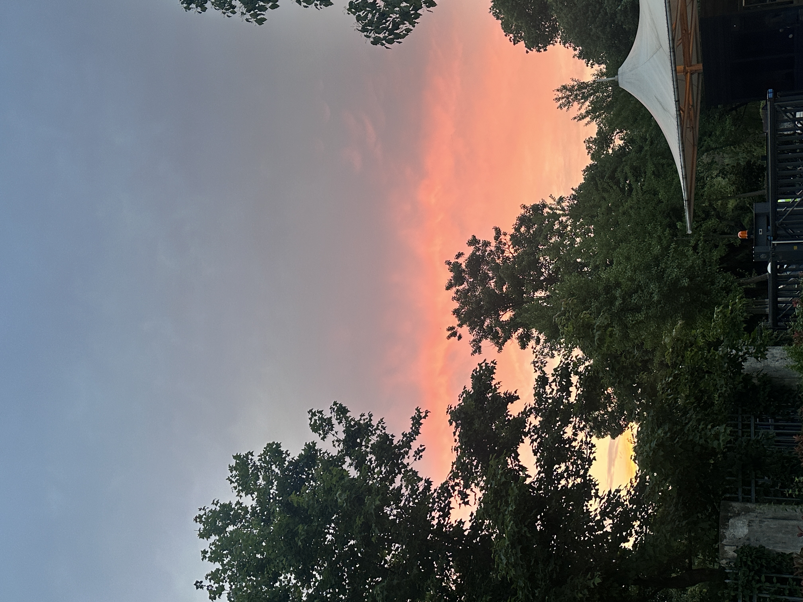

陈嘉琦
Cecilia Chen
🎈 个人简介 About Me
我是一名计算机专业的大学生，正满怀热情地投身于前端基础技术的学习与实践之中。作为前端技术的初探者，我对HTML、CSS以及JavaScript等语言有着深厚的兴趣与不懈的追求。我深知，前端技术是现代互联网应用不可或缺的一部分，它不仅关乎网页的美观与实用，更承载着用户体验与交互的重任。
在学习之余，我也积极探索将所学应用于实践的机会。我曾参与过多个小型项目的开发，通过实际操作，不仅加深了对前端技术的理解，也锻炼了自己的团队协作与问题解决能力。
展望未来，我期望能将所学技能转化为实际成果，为社会创造更多价值。同时，我也希望能够通过不断学习与实践，逐步成长为一名优秀的前端开发工程师，为互联网贡献自己的一份力量。在追求技术成长的同时，我也将始终保持对知识的敬畏与对创新的渴望，努力成为信息技术领域的优秀学生。
- 性别: 女
- 年龄: 20岁
- 籍贯: 湖北武汉
- 专业: 信息管理与信息系统
- 邮箱: 153744296@qq.com
📷 与我相关 Life
